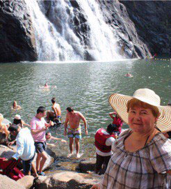
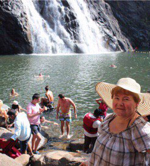

+91 74996 65426


 

💵 Excursion price: 58$ per person.
👼 Children under 5 years old - free of charge (without a seat, in the hands of parents).
⏳ From 5:00 to 20:00. Travel time - 5 hours, including a stop for breakfast.
🇺🇸 English guide.
🕉 To see the real India with its especially religious population and traditional way of life, it is worth leaving South Goa for at least a day and finding yourself in the neighboring state of Karnataka in the city of Murdeshwar. This picturesque holy place is known for its monument - the largest seated statue of the god Shiva. The height of the statue is 37.5 meters. The construction of the statue lasted 2 years and ended in 2002.
♜ In addition, the main attractions include the Shiva temple and the Gopuram temple tower, whose height is 75 meters. It is considered the highest in the world.
This place, as Indians believe, was consecrated by a piece of pranalingam from Gokarna, abandoned by the demon Ravana.
📣 You will see the world's highest seated statue of the god Shiva, take the elevator to the 20-story Gopuram by elevator. Also visit the temple of the god Shiva of the mid 16th century. Stroll through the park amidst many interesting religious buildings.
🕎 Next item you will visit: Gokarna - holy ancient, place of pilgrimage of the Hindus. Translated from Sanskrit, "Gokarna" means "Cow's ear." According to legend, in this place Shiva appeared from the ear of Prithivi, who took the form of a cow.
📢 You will see the Ganesha temple, the Mahabaleshwar temple, the temple of the goddess Kali, a sacred pond, a shopping street.
🌴 Later, you will find yourself on the beautiful Palolem beach, where you can swim, sunbathe and dine.
📌 In the program:
✅ The world's tallest (37.5 m!) Seated statue of the god Shiva.
✅ Visit to a museum telling the story of Shiva Lingam.
✅ Ascent to the 20-story Gopuram Tower (by elevator).
✅ Golden Temple of God Shiva.
✅ Cave with legends from the epic Ramayana.
✅ Hindu temples of the pilgrimage village of Gokarna.
✅ Temple of Ganesha (god of wisdom).
✅ Cotityrth Pond.
✅ Rest and lunch on a beautiful beach.
📌 Price includes:
✅ Comfortable transport with air conditioning.
✅ Services of a English guide.
✅ Breakfast.
✅ All entrance fees to temple complexes.
✅ Photo and video shooting.
📌 Price does not include:
✖ Lunch at Palolem Beach.
🎒 What to bring with you: bathing accessories, a towel, comfortable shoes. To visit the temples of Gokarna: for girls shawls or pareos, cover your shoulders and knees.
👩🧑🧑👩 Discounts for a group
👼 Children under 5 years old - free of charge (without a seat, in the hands of parents).
Accepting bitcoin:

3Kznb8Z4skuUZp6rJJTKG91UMz9jn42Yno